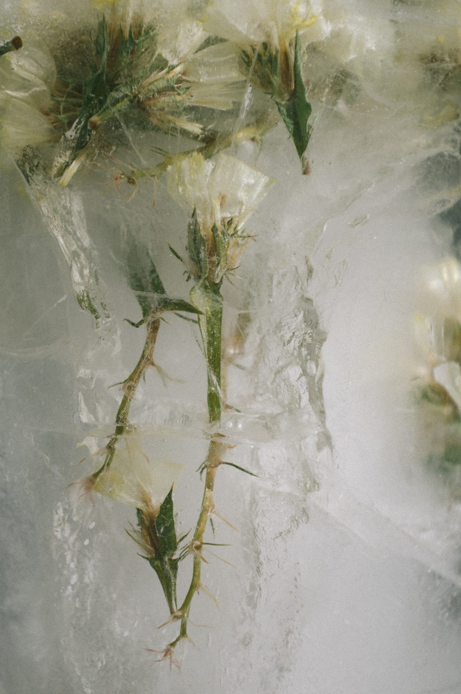

Knowing SeedNotes and sources
Six short notes on the things this practice is made of: the seed, the seed that belongs, the fold, paper that returns, colouring, and giving back. Each says where it comes from and what it does not claim.
One
A seed is a plant embryo packaged with stored food inside a protective coat. The coat keeps water from entering before the proper time, which holds the seed in a kind of waiting.
Germination begins when the seed takes in water, which restarts what was paused inside it. The first part to emerge is the radicle, which becomes the first root. The leaves come after.
Where this stops. These are general facts about seeds. Each species has its own needs — some want cold, some want rain, some wait for years — and the note on this site reads those facts as company for a feeling, which is a way of attending, not a finding.

Two
The practice asks for seed native to where you live, from a source near you. Conservation bodies give the reason plainly. Minnesota's Department of Natural Resources advises that seed from sources closest to a site will be more adapted to its conditions. New Zealand's Department of Conservation calls the practice eco-sourcing: collecting from nearby natural populations.
In Ireland, the All-Ireland Pollinator Plan goes further and does not recommend wildflower seed mixes at all, because they often contain non-native or imported seed.
Where this stops. “Native” is local. A plant that belongs in one valley may not belong in the next country. The Seed Atlas offers a first set of regions with sources; it is a place to start asking, not a planting list.
Three
The pot is a paper box made by folding the four corners of a square to its centre and raising the sides. Paperfolders often call it the masu, after the square wooden box once used in Japan to measure rice.
The paperfolding historian David Mitchell traces its first known appearance in Japan to a book by Isao Honda published in 1931, and notes a “closed box” in a German book of 1869 that is most probably the same fold. It has been made in more than one place for a long time, and no one person can be named as its maker.
Where this stops. This site does not call the fold ancient, and does not claim it for one tradition. It uses a Japanese name for it because that is the name most folders know.
Four
On 4 May 2016, Greenery Day in Japan, the Mainichi newspaper printed a Green Newspaper, made with the agency Dentsu, on paper embedded with seeds and printed with plant-based ink, so that the day's news could be planted.
Seedling Pages borrows that idea and changes it. The seed is not in the paper. You print on ordinary paper, and you choose a seed that belongs where you live.
Where this stops. How quickly a printed page softens and breaks down depends on the paper, the soil and the weather. This site makes no promise about it.
Five
Colouring books are older than they seem. The Little Folks' Painting Book, illustrated by Kate Greenaway and published by McLoughlin Brothers around 1879, is often named as the first. Colouring books for adults had a satirical moment in the early 1960s, and returned in the 2010s as something sold for calm.
There is a small body of research. In 2005 Nancy Curry and Tim Kasser asked whether colouring a mandala could reduce anxiety. A replication in 2012 by Renée van der Vennet and Susan Serice reported that colouring a mandala reduced anxiety more than colouring a plaid design or colouring on blank paper.
The American Art Therapy Association has said where the line sits:
“The American Art Therapy Association supports the use of coloring books for pleasure and self-care; however, these uses should not be confused with the delivery of professional art therapy services, during which a client engages with a credentialed art therapist.”
Where this stops. Those studies measured anxiety over a short sitting. They say nothing about grief, trauma, or lasting change, and this site claims none of those. Seedling Pages is an expressive art activity offered peer to peer. It is not art therapy.
Six
The shape of this practice — make something with care, return most of it, keep a little — is much older than this site. One place it is kept is the sand mandala of Tibetan Buddhism, built grain by grain and then swept away.
In January 2002, monks of Drepung Loseling Monastery made a healing mandala at the Smithsonian in Washington. At the closing ceremony they gave some of the sand to visitors and poured the rest into the Potomac River. The museum's account says that destroying a mandala “symbolizes the impermanence of existence.”
Where this stops. That practice is sacred, and it belongs to those who keep it. It is named here as an elder, not as a source or a method. The pages on this site are not mandalas and are not called mandalas.
Gratitude
These pages grow out of Other Bodies and Make Space, and out of years of photographing the plants I live alongside.
They also sit within a lineage of the healing mark, and three teachers are present in them. Shauna Kaendo and the ohHEY Creative Care Community taught me the principle this work is built on: that making marks together — in community, with breath and rhythm and no image to complete — is itself a form of care, and that we heal alongside one another rather than alone. Behind that practice stand two teachers I have never met. Florence Cane, nearly a century ago, showed that a freeing line begins not in the hand but in the breath and the whole moving body, and understood the scribble as a path to the unconscious. Resmaa Menakem, whose somatic work attends to what the body carries — including what it has inherited — meets that material in the body itself, and pairs each practice with the written mark he calls “soul scribing.” I claim no mastery of what any of them teach; these pages simply learn from all three, with gratitude.
Seedling Pages is not a diagnostic tool, a therapeutic assessment, or a replacement for professional mental health support. It is a creative care practice — a way of tending to yourself through attention, making, and the quiet company of the natural world. If you are working with difficult emotions and would like more support, please reach out to a qualified therapist or counsellor.